5/4/2026 - Bobcat Ridge and Cat Mountain
Loop hike through the southern area of Tucson Mountain park, first going up and over Bobcat ridge then up to Cat Mountain then back to the trailhead. Cat Mountain was fun and about a 890 ft elevation gain. Once at the saddle it seems the climb doesn’t go much further but the true summit is still another 400 ft up. The hike had one brief scramble and was pretty fun, following along the spine of the small mountain, with good views of the area.
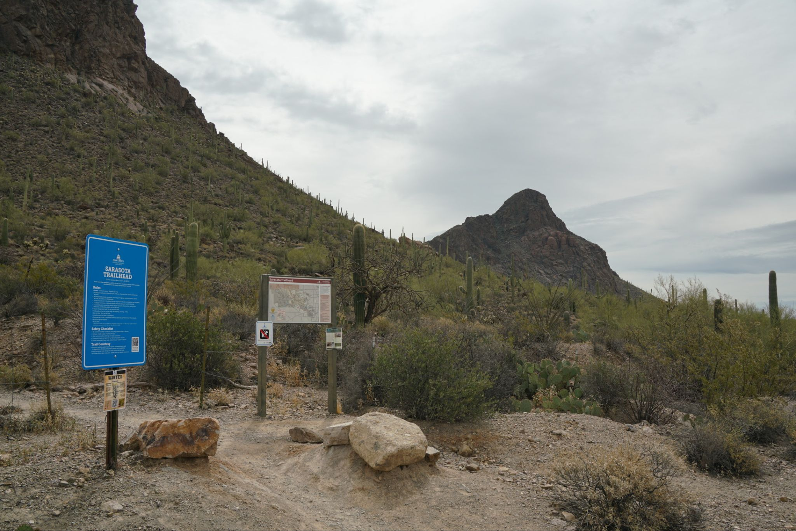
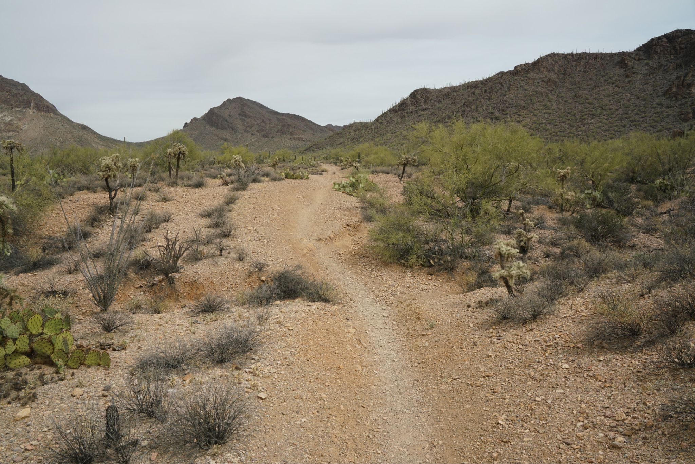
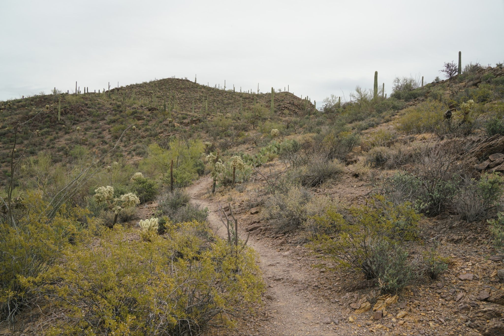
Bobcat ridge. Cat Mountain in the distance
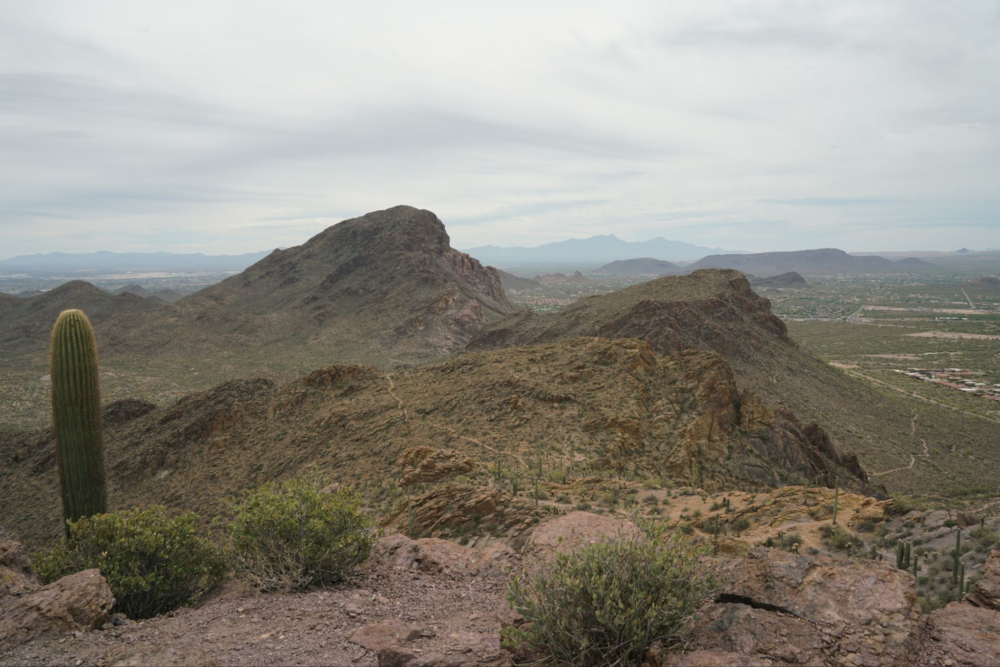
Looking back. Golden Gate Peak and Bren in the distance, to the north
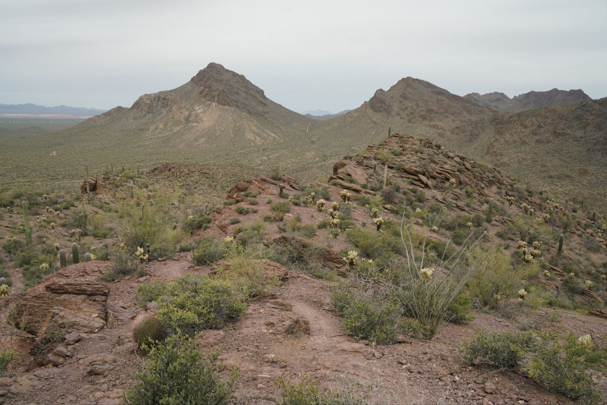
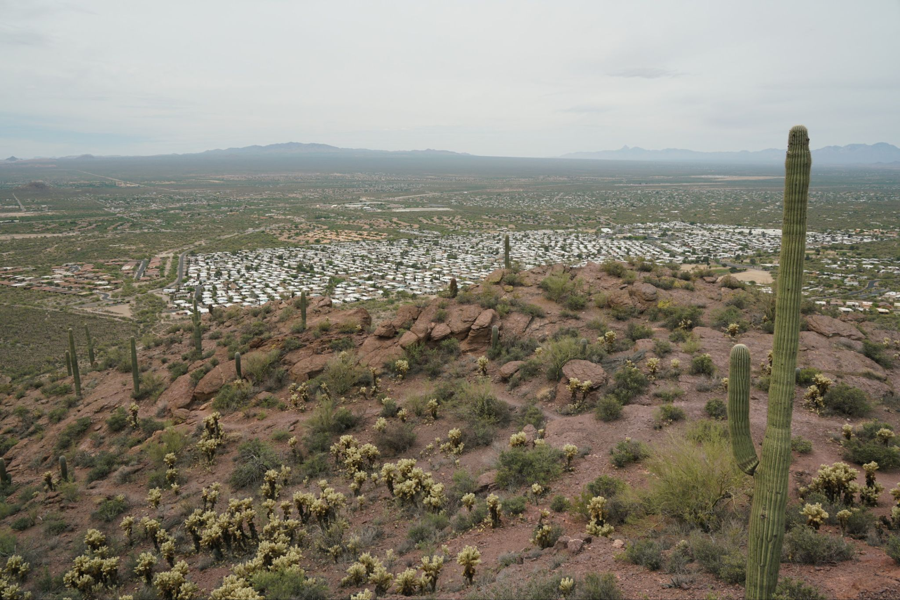
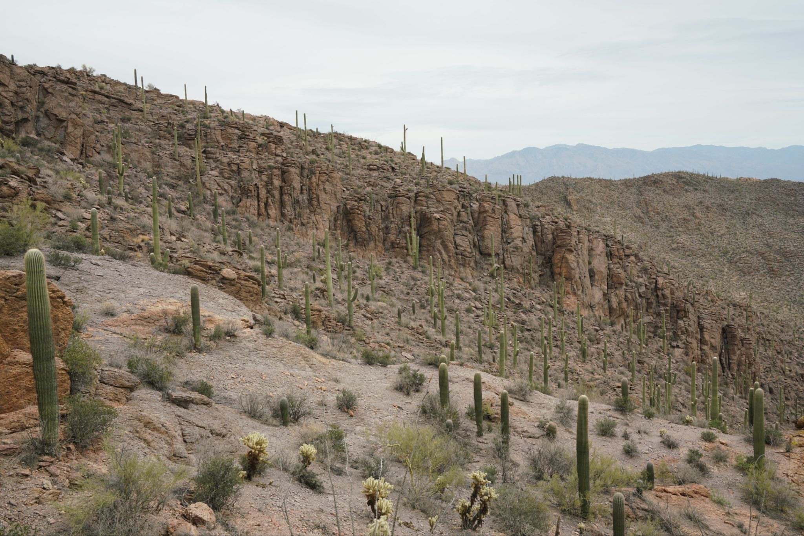
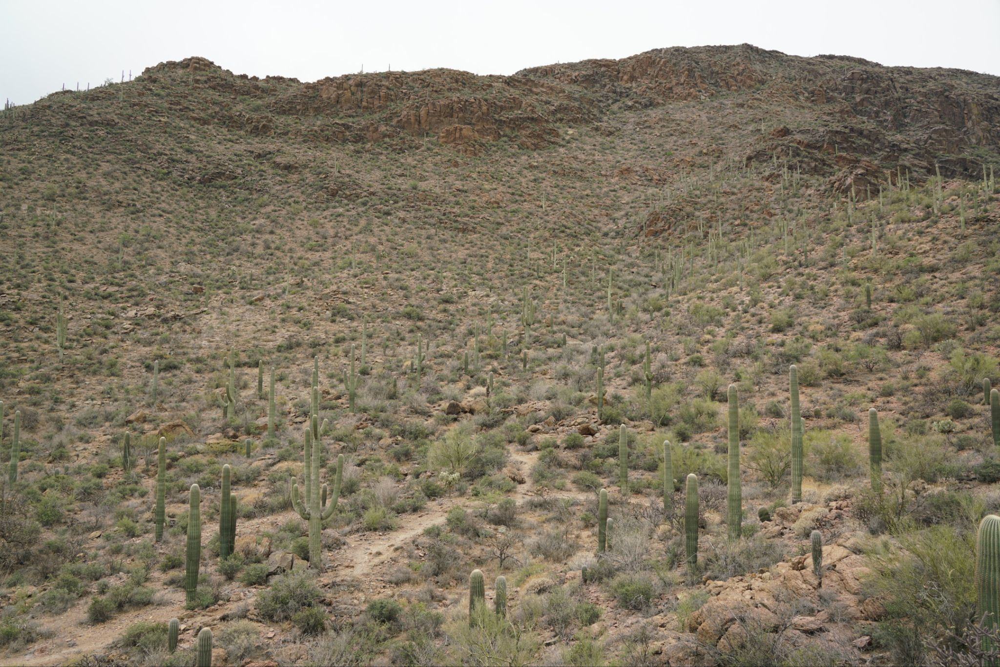
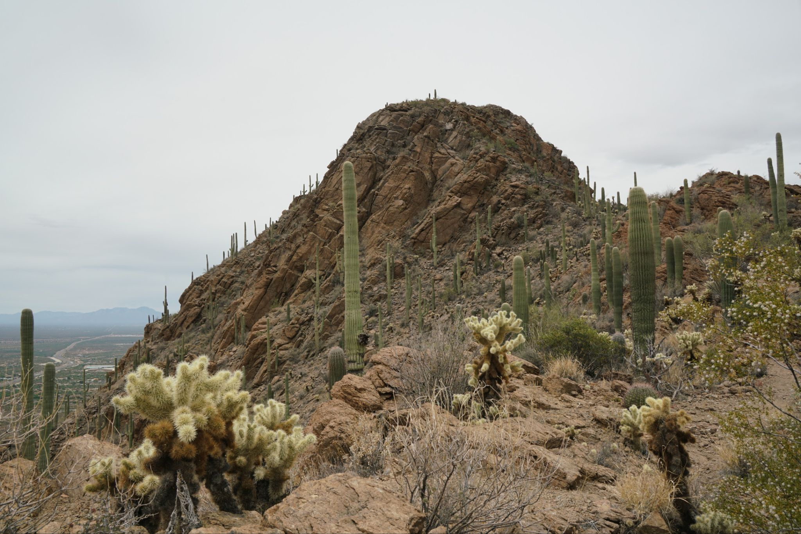
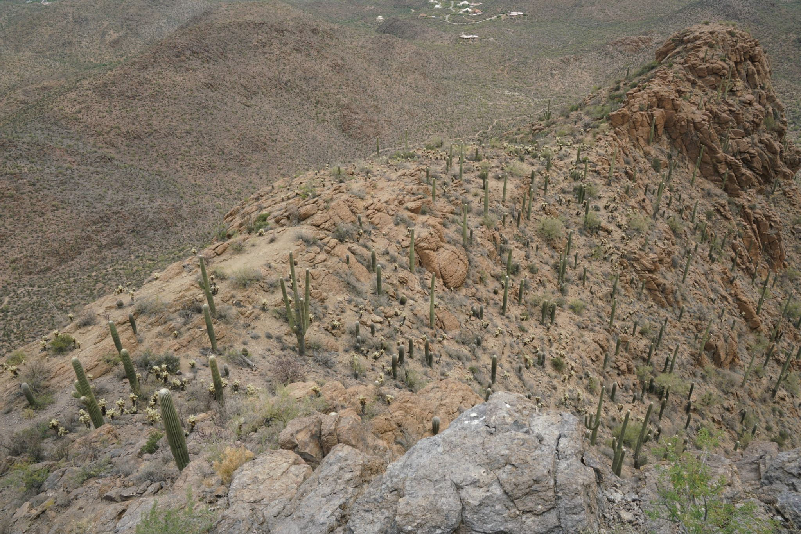
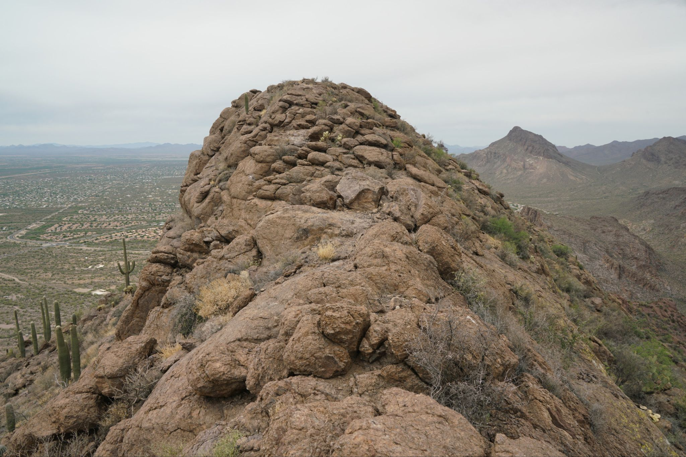
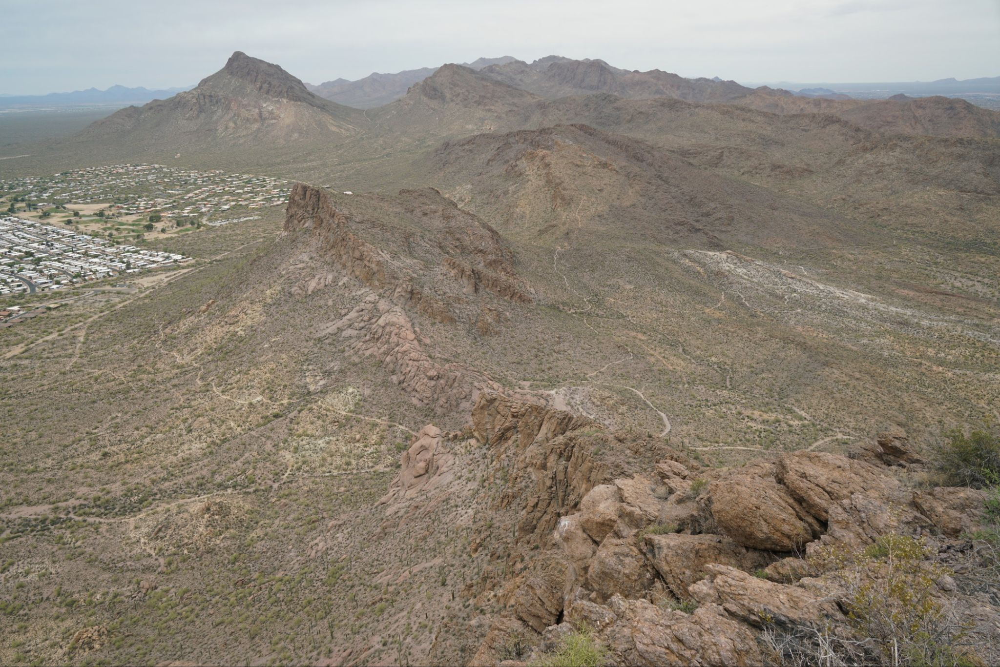
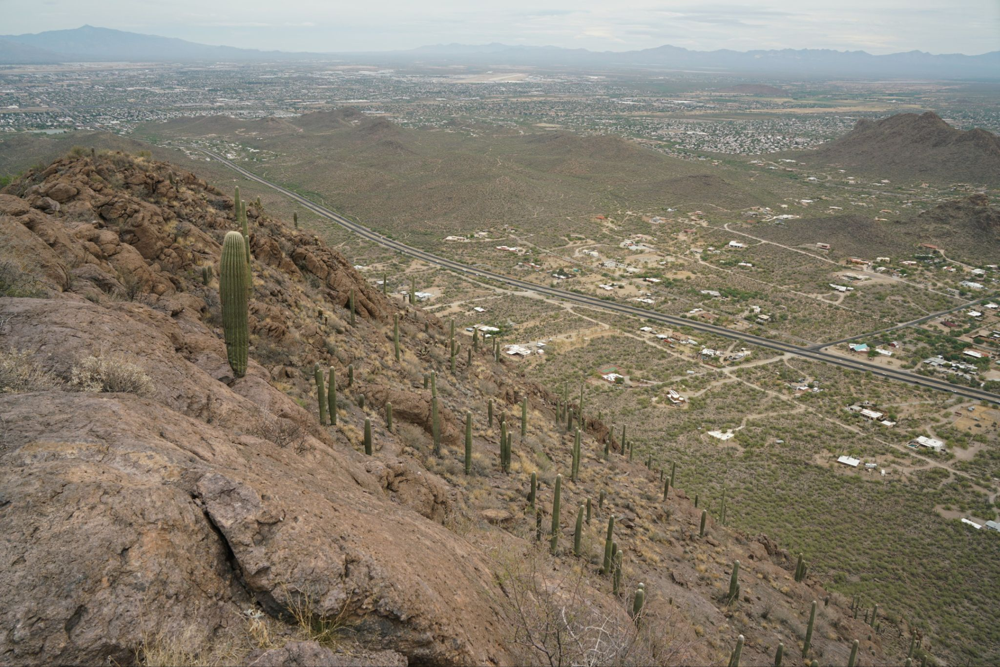
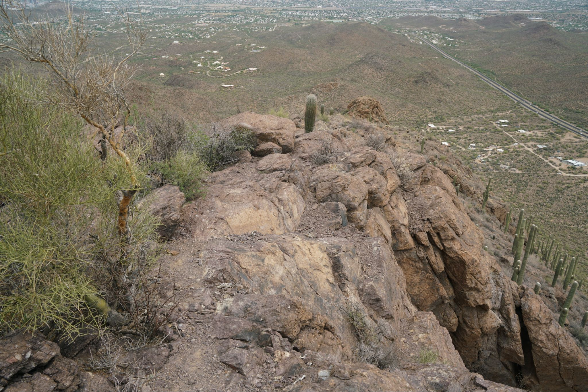
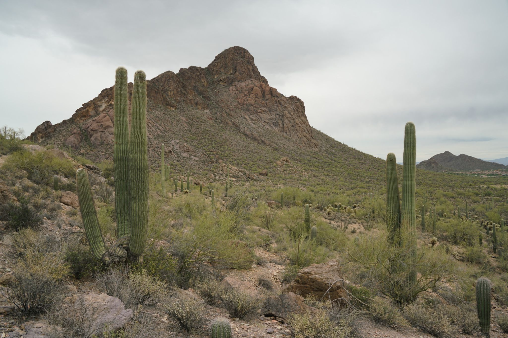